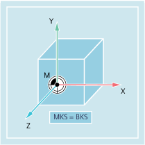
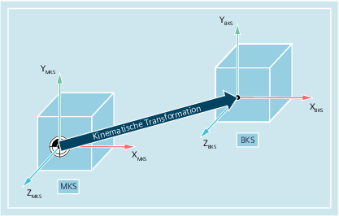

Das Basiskoordinatensystem (BKS) besteht aus drei rechtwinklig angeordneten Achsen (Geometrieachsen), sowie aus weiteren Achsen (Zusatzachsen) ohne geometrischen Zusammenhang.
Das BKS und das MKS fallen immer dann zusammen, wenn das BKS ohne kinematische Transformation (z. B. 5-Achstransformation, TRANSMIT / TRACYL / TRAANG) auf das MKS abgebildet werden kann.
Bei diesen Maschinen können Maschinenachsen und Geometrieachsen den gleichen Namen haben.
Das BKS und das MKS fallen nicht zusammen, wenn das BKS mit kinematischer Transformation (z. B. 5-Achstransformation, TRANSMIT / TRACYL / TRAANG) auf das MKS abgebildet wird.
Bei diesen Maschinen müssen Maschinenachsen und Geometrieachsen unterschiedliche Namen haben.
Das Werkstück wird immer in einem zwei- oder dreidimensionalen rechtwinkligen Koordinatensystem (WKS) programmiert. Zur Fertigung dieser Werkstücke werden aber immer häufiger Werkzeugmaschinen mit Rundachsen oder nicht rechtwinklig angeordneten Linearachsen eingesetzt. Zur Abbildung der im WKS programmierten Koordinaten (rechtwinklig) in reale Maschinenachsbewegungen dient die kinematische Transformation.
Siehe auch:
Übersicht der verschiedenen Koordinatensysteme
Wie hängen die verschiedenen Koordinatensysteme zusammen?